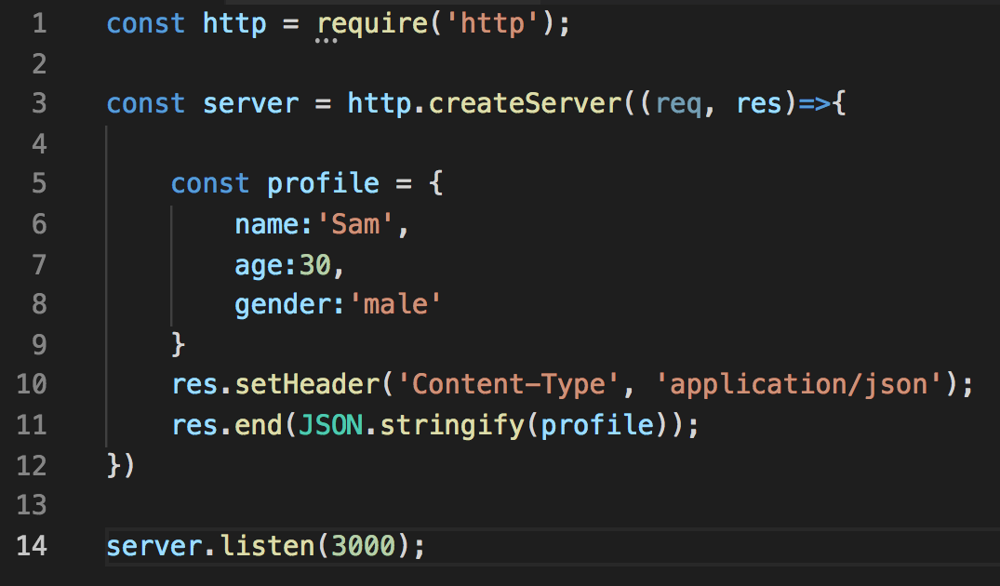
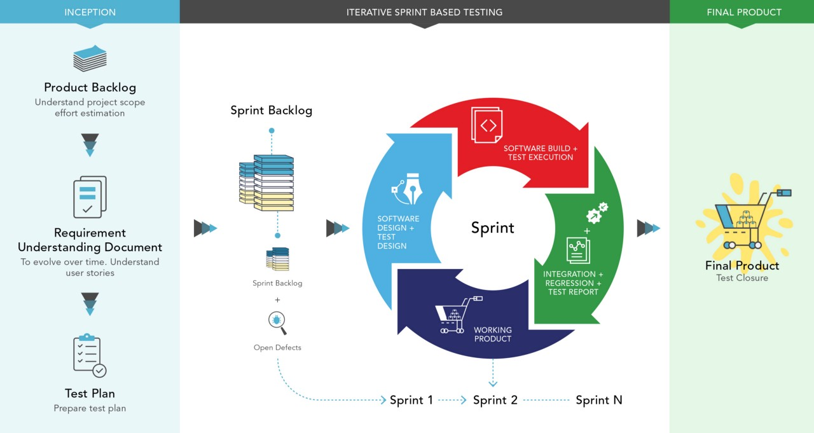
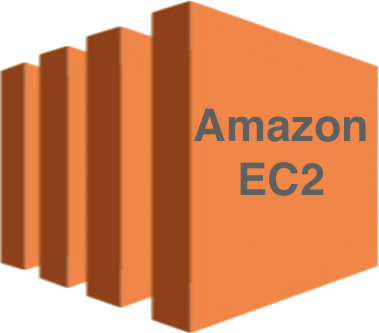

Building a simple server with Node.js and Express.js

During my days in coding bootcamp, I heard a lot about Node.js but never got a time to explore it because it wasn't a part of our course. Finally, I was blessed with some free time this weekend which I used for introducing myself to Node.js and here I am today trying to share my understanding about this powerful javascript runtime. ...Read More
Automate your web app test with Selenium WebDriver using Ruby
Before we jump into some big words like automate, selenium and webdriver, let’s first understand — what testing is. Testing is one of the most important process in software or web application development. We test our application all the times from very beginning when we write our first line of code to the end of project completion. To be more precise, testings are done even before we start coding, for eg, reviews of software requirement specifications, such as business requirements, functional requirements, system requirements, user stories, epics, use cases ...Read More
What is Amazon EC2 and How to launch one?

Amazon EC2 stands for Amazon Elastic Compute Cloud. It’s basically a web service that provides resizable compute capacity in the Amazon Web Services (AWS) cloud. It provides virtual computing environments known as EC2 instances. So Amazon EC2 is just a virtual machine that allows you to launch various servers in the cloud. Before we move on to launching our own cloud virtual machine, it would be ideal to understand — What is cloud computing? ...Read More
How to utilize Rails layouts to keep our view templates less clutter
The word layouts should be pretty common to those who have been working on rails projects for while. If you are new to rails like me and have heard of layouts but do not know how to implement it in your project, then you may want to continue what you are doing at this moment. As default, rails creates Layouts folder under app/views subdirectory when you first create your new project with ‘rails new ...Read More